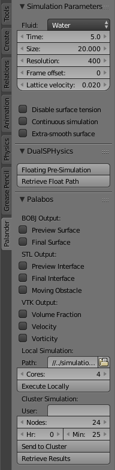

This is a user’s manual for Palander, the Blender add-on for running the Palabos simulation engine. It provides instructions for how to install and use the program, as well as a simple tutorial to get the reader started on how to use it as well as Blender in general. Some knowledge of Linux basics like compiling and ssh is recommended to increase the likelihood of a successful installation.
Both Palabos and Blender are open-source tools. In the same spirit, the files of this program are also released as open-source under the conditions of the following licenses:
Palander is provided “as is”, and it will most likely not work perfectly for all possible scene setups. Palabos is more of a scientific/engineering tool than a content creation engine. Its main mode of usage is to optimize an executable for each use case separately. This means that this program, which is intended as a general tool, must make compromises as to speed, stability, etc. in order to work sufficiently well for as many use cases as possible. If you think you know what you’re doing, you’re invited to try to optimize the executable for your own specific setups; however, control of most of the relevant parameters is already offered through the add-on.
Palander is Copyright © 2017 Animationsinstitut, Filmakademie Baden-Wuerttemberg. It has been realized in the scope of the Media Solution Center project, funded by the state of Baden-Wuerttemberg, Germany.
Palander is not a single piece of code, but rather an entity based on the established open-source programs Palabos and Blender. This entity consists of the following five parts:
It is recommended to compile the Palabos executable yourself for your desired platform; a Makefile is provided for compilation on Linux computers. Palabos is primarily intended for parallel use on clusters, which is why its primary platform is Linux. However, it has also been tested and found to work on Windows, albeit not without difficulties in compiling. Pre-compiled executables may be available (without guarantee!) for specific platforms — please inquire the authors.
The instructions below are first for desktop usage; subsection 2.7 is necessary only if you wish to run your simulations on the Hazel Hen supercomputer. Likewise, compiling and installing the Palabos executable on your desktop is not necessary if you only wish to run your (Palabos) simulations on the supercomputer. In this case, you can make test simulations using Blender’s native fluid simulation engine, but please keep in mind that the results might differ considerably from the Palabos simulations.
More in-depth instructions for installing Palabos can be found at the Palabos website under http://www.palabos.org/documentation/userguide/getting-started.html.
Installing Blender is very straightforward: go to https://www.blender.org/download, choose your platform, and click on a link to download. Install using the instructions provided on the website.
Palander’s Blender add-on is named palander_addon.py. To install it, follow these steps:
The last two steps are necessary for the add-on to be loaded upon each startup of Blender. To verify that installation was successful, make sure that there is a new tab named “Palander” at the bottom of the tab column on the left-hand side of the Blender window. As with any modifications to the add-on, you might need to restart Blender for the changes to take effect.
If you wish to modify the python add-on yourself after installation, you can simply copy the new version into Blender’s add-on directory. For Linux, this should be something like ~/.config/blender/2.78/scripts/addons.
If you don’t have a pre-compiled Palabos executable, you need to compile one yourself. For this, you first need to install the Palabos library. Officially, you can download this library at https://www.palabos.org/download-ql. However, the current (as of April, 2017) newest official release version, v1.5r1, is incompatible with Palander; improvements have since then been made to the library without its being released, and a newer version that is actually compatible is available from the authors of Palander, and is distributed with this installation. Future official releases of Palabos should also be compatible with Palander, and their use is recommended once they become available.
Either way, you should obtain a ZIP file of the Palabos library. Simply unzip it and make sure that you are satisfied with the location into which the library directory is uncompressed.
Palander comes with the Palabos program file palander_engine.cpp and its Makefile. Place these in a directory that you wish to use to store your simulation output. Then, modify the Makefile by changing the following settings as required:
In addition, you may want to change the number of compiler threads in the SCons definition (parameter -j, default 4).
After making these modifications, you are ready to compile the Palander engine. In Linux, you can do this with the command make in the directory where you have the files palander_engine.cpp and Makefile. It will take a few minutes to compile all of the necessary library functions for the first time, but after this, re-compiling after any modifications to palander_engine.cpp will take a much shorter amount of time. After compiling, you will have an executable called palander_engine, which the add-on will call from inside Blender when requested to perform a simulation using Palabos.
According to the makers of Palabos, compiling a Palabos executable should work the same way under Mac OS X as under Linux. You simply need to find a gcc-compatible compiler such as xcode and use the compiler flag -DPLB_MAC_OS_X. Then follow the instruction given in subsection 2.4. However, the authors have not tested this and will therefore not be able to provide any support.
If despite all warnings you wish to compile the Palabos executable in Windows, there are several considerations that you have to keep in mind:
Since Palander can send a simulation job to be performed on the Hazel Hen supercomputer in HLRS, it is crucial that the user have an account on Hazel Hen. Palander assumes that this is the case, and that it is being run on a computer that is allowed to access the supercomputer, and can do so without needing to prompt for a password. To be granted access, your IP address first needs to be cleared by the HLRS administration, so that you can get through their firewall; then, you need to set up password-free access yourself on your computer. If you don’t know how to do this, you can find instructions on the Internet, e.g. here: http://www.rebol.com/docs/ssh-auto-login.html.
After completing these two steps, you should be able to log in to Hazel Hen using ssh (e.g. ssh username@hazelhen.hww.de). While logged on, you can set up Palander’s supercomputer end with the following steps:
For more in-depth instructions on how to use Blender itself, the reader is encouraged to search for the Blender official online manual, as well as subject-specific third-party tutorials e.g. on YouTube. What follows is a cursory set of instructions concentrating on those features of Blender that are relevant to using Palander.
To make use of Palander, first you need to build a scene as you normally would when using Blender: first add and customize a number of objects, then apply a fluid simulation modifier to each relevant object, and finally launch Palander through the add-on. New objects are available e.g. on the “Create” tab on the left-hand side; the fluid simulation modifiers can be found on the “Physics” tab.
For a successful simulation, you need one cuboid domain object, inside of which all of the water simulation happens. The sides of this cuboid act as walls for the fluid, but any non-fluid objects can exist partially or completely outside of the domain — the domain walls won’t affect them. For there to be any fluid inside of the domain, you need to put in one or more fluid objects or an inflow object. Then, you can use static or dynamic obstacle objects to influence the motion of the fluid during the simulation, as long as this happens withing the confines of the domain.

In addition to the explicit parameters, Palander also uses some of Blender’s own simulation parameters. These of course include all objects from the scene that have been flagged for fluid simulation, such as one domain, any number of obstacles or fluids, one inflow, and one outflow. Furthermore, the following parameters are implicitly passed on to the Palabos simulation:
Also, Palander supports a certain number of different keyframe actions. These are
This tutorial will show how to build and simulate a simple dam break scenario.
You should realize that the resolution of the simulation is quite low by default (65/45). This means that when you preview the results in the viewport, there are only 45 subdivisions along the long edge of the domain! To view the higher-resolution results (65), select “Final” from Fluid → Viewport Display just below the resolution settings. This isn’t much better — to see a clear difference, set the resolutions to 200/100 and bake the simulation again. You can see that the simulation is much slower, but if you have the patience to wait, you can again compare the Preview and Final resolutions afterwards. They should now look more like an actual fluid instead of a moving collection of blocks.
Now you can try to run your simulation using Palabos. In many cases, Palabos can be slower than Blender’s native engine, so you might want to start with a resolution of 100 to see how fast the simulation can progress. This time, you need to change the resolution from the “Palander” tab on the left-hand side of the viewport. Change any other parameters that you wish (e.g. click on “Disable surface tension” to try to mimick the Blender results), including the path, which you should set to the directory where you have installed Palander (if you’re running Palabos locally), or the user name if you want to run on Hazel Hen. Before clicking on “Execute Locally” or “Send to Cluster”, make sure that your water object is active in the viewport — you may have deactivated it by clicking on its eye symbol in order to better see the results of the previous simulation. Inactive objects will not be passed on to Palabos!
When you run Palabos locally, the simulation results are automatically output into the same directory where Blender places its own fluid simulation results. Consequently, you can preview the results as they come in, and you don’t need to import anything into Blender for further processing and rendering. However, if you run Palabos on Hazel Hen, you will need to transfer the results into Blender’s cache directory before being able to view them. You can do this easily by clicking on the “Retrieve Results” button on the “Palander” tab. Please note that there is currently no algorithm to check what you have previously downloaded; this button will retrieve all the results, starting from the first frame, each time that it is pressed.
Also note that there is no explicit connection between your Blender setup and the retrieved results; rather, the algorithm retrieves the results from the newest workspace, i.e. from the most recently started simulation job. For example, this means that if you are working on two projects, and you run a fluid simulation in each of them, you can only use the “Retrieve Results” button to download the results from the simulation that started to process later on the supercomputer. To retrieve any other results, you must log in to Hazel Hen yourself and download the desired files manually. This will not be a problem if you run and process one simulation at a time.
If the simulation doesn’t finish in the time allotted, the result files are not transferred from the workspace to your home directory on Hazel Hen. This means that when the workspace expires, your results will be lost! By default, Palander reserves workspaces for 10 days, so you have plenty of time to retrieve your results before that happens. Simulations that have time to finish will be copied to your home directory, into a subdirectory denoted by run and the date and time of the start of the simulation. These files are safe even after the corresponding workspace expires, but you cannot use the “Retrieve Results” button to download them anymore.